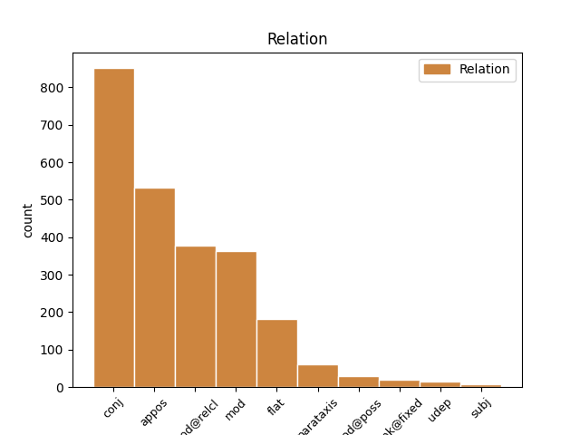
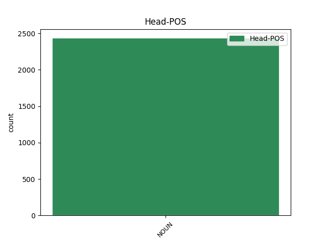
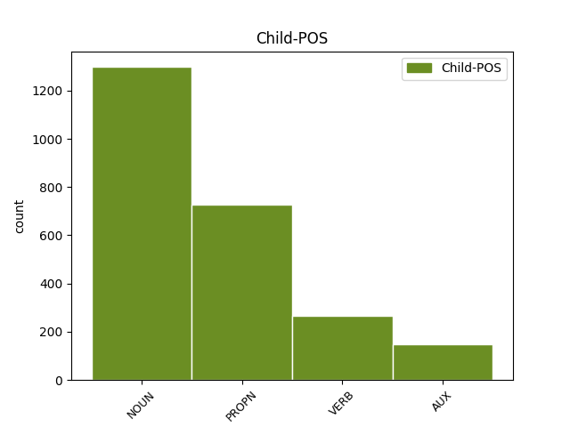

Distribution of features within this leaf



Agreement Rules sorted by frequency.
- When the dependent token is the conjunct(conj) of the head token, and the head token is NOUN and the dependent token is NOUN.
1 Sus _ _ _ _ 0 _ _ _
2 Antigoon _ _ _ _ 0 _ _ _
3 - _ _ _ _ 0 _ _ _
4 Bet-bet-bet-bet-betovergrootvader bet-bet-bet-bet-betovergrootvader NOUN N|soort|ev|basis|zijd|stan Gender=Com|Number=Sing 0 _ _ _
5 van _ _ _ _ 0 _ _ _
6 Suske _ _ _ _ 0 _ _ _
7 en _ _ _ _ 0 _ _ _
8 de _ _ _ _ 0 _ _ _
9 ontdekker ontdekker NOUN N|soort|ev|basis|zijd|stan Gender=Com|Number=Sing 4 conj _ _
10 van _ _ _ _ 0 _ _ _
11 het _ _ _ _ 0 _ _ _
12 eiland _ _ _ _ 0 _ _ _
13 Amoras _ _ _ _ 0 _ _ _
14 . _ _ _ _ 0 _ _ _
1 Sus _ _ _ _ 0 _ _ _
2 Antigoon _ _ _ _ 0 _ _ _
3 - _ _ _ _ 0 _ _ _
4 Bet-bet-bet-bet-betovergrootvader _ _ _ _ 0 _ _ _
5 van _ _ _ _ 0 _ _ _
6 Suske _ _ _ _ 0 _ _ _
7 en _ _ _ _ 0 _ _ _
8 de _ _ _ _ 0 _ _ _
9 ontdekker _ _ _ _ 0 _ _ _
10 van _ _ _ _ 0 _ _ _
11 het _ _ _ _ 0 _ _ _
12 eiland eiland NOUN N|soort|ev|basis|onz|stan Gender=Neut|Number=Sing 0 _ _ _
13 Amoras Amoras PROPN N|eigen|ev|basis|onz|stan Gender=Neut|Number=Sing 12 appos _ SpaceAfter=No
14 . _ _ _ _ 0 _ _ _
1 Hond hond NOUN N|soort|ev|basis|zijd|stan Gender=Com|Number=Sing 0 _ _ _
2 die _ _ _ _ 0 _ _ _
3 vaak _ _ _ _ 0 _ _ _
4 Suske _ _ _ _ 0 _ _ _
5 en _ _ _ _ 0 _ _ _
6 Wiske _ _ _ _ 0 _ _ _
7 in _ _ _ _ 0 _ _ _
8 hun _ _ _ _ 0 _ _ _
9 avonturen _ _ _ _ 0 _ _ _
10 bijstaat bijstaan VERB WW|pv|tgw|met-t Number=Sing|Tense=Pres|VerbForm=Fin 1 mod@relcl _ SpaceAfter=No
11 . _ _ _ _ 0 _ _ _
1 In _ _ _ _ 0 _ _ _
2 het _ _ _ _ 0 _ _ _
3 verhaal _ _ _ _ 0 _ _ _
4 treden _ _ _ _ 0 _ _ _
5 Tante tante NOUN N|soort|ev|basis|zijd|stan Gender=Com|Number=Sing 0 _ _ _
6 Sidonia Sidonia PROPN N|eigen|ev|basis|zijd|stan Gender=Com|Number=Sing 5 flat _ SpaceAfter=No
7 , _ _ _ _ 0 _ _ _
8 Wiske _ _ _ _ 0 _ _ _
9 , _ _ _ _ 0 _ _ _
10 en _ _ _ _ 0 _ _ _
11 haar _ _ _ _ 0 _ _ _
12 broer _ _ _ _ 0 _ _ _
13 Rikki _ _ _ _ 0 _ _ _
14 op _ _ _ _ 0 _ _ _
15 . _ _ _ _ 0 _ _ _
1 Toen _ _ _ _ 0 _ _ _
2 echter _ _ _ _ 0 _ _ _
3 Wiske _ _ _ _ 0 _ _ _
4 in _ _ _ _ 0 _ _ _
5 het _ _ _ _ 0 _ _ _
6 album album NOUN N|soort|ev|basis|onz|stan Gender=Neut|Number=Sing 0 _ _ _
7 « _ _ _ _ 0 _ _ _
8 De _ _ _ _ 0 _ _ _
9 koeiencommissie _ _ _ _ 0 _ _ _
10 » _ _ _ _ 0 _ _ _
11 ( _ _ _ _ 0 _ _ _
12 nr nummer NOUN N|soort|ev|basis|onz|stan Gender=Neut|Number=Sing 6 mod _ _
13 268 _ _ _ _ 0 _ _ _
14 - _ _ _ _ 0 _ _ _
15 december _ _ _ _ 0 _ _ _
16 2001 _ _ _ _ 0 _ _ _
17 ) _ _ _ _ 0 _ _ _
18 een _ _ _ _ 0 _ _ _
19 naveltruitje _ _ _ _ 0 _ _ _
20 en _ _ _ _ 0 _ _ _
21 een _ _ _ _ 0 _ _ _
22 korte _ _ _ _ 0 _ _ _
23 rok _ _ _ _ 0 _ _ _
24 aankreeg _ _ _ _ 0 _ _ _
25 , _ _ _ _ 0 _ _ _
26 kwamen _ _ _ _ 0 _ _ _
27 er _ _ _ _ 0 _ _ _
28 luide _ _ _ _ 0 _ _ _
29 protesten _ _ _ _ 0 _ _ _
30 . _ _ _ _ 0 _ _ _
1 Er _ _ _ _ 0 _ _ _
2 is _ _ _ _ 0 _ _ _
3 ook _ _ _ _ 0 _ _ _
4 een _ _ _ _ 0 _ _ _
5 website _ _ _ _ 0 _ _ _
6 geopend _ _ _ _ 0 _ _ _
7 ter _ _ _ _ 0 _ _ _
8 gelegenheid _ _ _ _ 0 _ _ _
9 van _ _ _ _ 0 _ _ _
10 het _ _ _ _ 0 _ _ _
11 jubileum jubileum NOUN N|soort|ev|basis|onz|stan Gender=Neut|Number=Sing 0 _ _ _
12 : _ _ _ _ 0 _ _ _
13 60 _ _ _ _ 0 _ _ _
14 jaar jaar NOUN N|soort|ev|basis|onz|stan Gender=Neut|Number=Sing 11 appos _ _
15 Suske _ _ _ _ 0 _ _ _
16 en _ _ _ _ 0 _ _ _
17 Wiske _ _ _ _ 0 _ _ _
18 . _ _ _ _ 0 _ _ _
1 Suske _ _ _ _ 0 _ _ _
2 en _ _ _ _ 0 _ _ _
3 Wiske _ _ _ _ 0 _ _ _
4 zijn _ _ _ _ 0 _ _ _
5 kinderen _ _ _ _ 0 _ _ _
6 ( _ _ _ _ 0 _ _ _
7 van _ _ _ _ 0 _ _ _
8 onbepaalde _ _ _ _ 0 _ _ _
9 leeftijd _ _ _ _ 0 _ _ _
10 ) _ _ _ _ 0 _ _ _
11 die _ _ _ _ 0 _ _ _
12 leven _ _ _ _ 0 _ _ _
13 in _ _ _ _ 0 _ _ _
14 een _ _ _ _ 0 _ _ _
15 gezin gezin NOUN N|soort|ev|basis|onz|stan Gender=Neut|Number=Sing 0 _ _ _
16 dat _ _ _ _ 0 _ _ _
17 geen _ _ _ _ 0 _ _ _
18 gezin _ _ _ _ 0 _ _ _
19 is zijn AUX WW|pv|tgw|ev Number=Sing|Tense=Pres|VerbForm=Fin 15 mod@relcl _ SpaceAfter=No
20 ; _ _ _ _ 0 _ _ _
21 naast _ _ _ _ 0 _ _ _
22 tante _ _ _ _ 0 _ _ _
23 Sidonia _ _ _ _ 0 _ _ _
24 vormen _ _ _ _ 0 _ _ _
25 de _ _ _ _ 0 _ _ _
26 pompeuze _ _ _ _ 0 _ _ _
27 Lambik _ _ _ _ 0 _ _ _
28 , _ _ _ _ 0 _ _ _
29 de _ _ _ _ 0 _ _ _
30 krachtige _ _ _ _ 0 _ _ _
31 Jerom _ _ _ _ 0 _ _ _
32 en _ _ _ _ 0 _ _ _
33 de _ _ _ _ 0 _ _ _
34 geleerde _ _ _ _ 0 _ _ _
35 professor _ _ _ _ 0 _ _ _
36 Barabas _ _ _ _ 0 _ _ _
37 de _ _ _ _ 0 _ _ _
38 vaste _ _ _ _ 0 _ _ _
39 volwassenen _ _ _ _ 0 _ _ _
40 in _ _ _ _ 0 _ _ _
41 de _ _ _ _ 0 _ _ _
42 strip _ _ _ _ 0 _ _ _
43 . _ _ _ _ 0 _ _ _
1 Lam lam NOUN N|soort|ev|basis|onz|stan Gender=Neut|Number=Sing 0 _ _ _
2 Gods God PROPN N|eigen|ev|basis|gen Number=Sing 1 mod _ _
3 gaat _ _ _ _ 0 _ _ _
4 digitaal _ _ _ _ 0 _ _ _
1 Ze _ _ _ _ 0 _ _ _
2 hebben _ _ _ _ 0 _ _ _
3 beide _ _ _ _ 0 _ _ _
4 wel _ _ _ _ 0 _ _ _
5 een _ _ _ _ 0 _ _ _
6 banderol _ _ _ _ 0 _ _ _
7 waarop _ _ _ _ 0 _ _ _
8 een _ _ _ _ 0 _ _ _
9 profetische _ _ _ _ 0 _ _ _
10 uitspraak _ _ _ _ 0 _ _ _
11 in _ _ _ _ 0 _ _ _
12 het _ _ _ _ 0 _ _ _
13 Latijn _ _ _ _ 0 _ _ _
14 staat _ _ _ _ 0 _ _ _
15 die _ _ _ _ 0 _ _ _
16 waarschijnlijk _ _ _ _ 0 _ _ _
17 verwijst _ _ _ _ 0 _ _ _
18 naar _ _ _ _ 0 _ _ _
19 Christus Christus PROPN N|eigen|ev|basis|gen Number=Sing 21 mod@poss _ _
20 ' _ _ _ _ 0 _ _ _
21 geboorte geboorte NOUN N|soort|ev|basis|zijd|stan Gender=Com|Number=Sing 0 _ _ _
22 . _ _ _ _ 0 _ _ _
1 60-jaar 60-jaar NOUN N|soort|ev|basis|zijd|stan Gender=Com|Number=Sing 0 _ _ _
2 viering viering NOUN N|soort|ev|basis|zijd|stan Gender=Com|Number=Sing 1 parataxis _ _
1 In _ _ _ _ 0 _ _ _
2 het _ _ _ _ 0 _ _ _
3 verhaal _ _ _ _ 0 _ _ _
4 treden _ _ _ _ 0 _ _ _
5 Tante tante NOUN N|soort|ev|basis|zijd|stan Gender=Com|Number=Sing 0 _ _ _
6 Sidonia _ _ _ _ 0 _ _ _
7 , _ _ _ _ 0 _ _ _
8 Wiske Wiske PROPN N|eigen|ev|basis|zijd|stan Gender=Com|Number=Sing 5 conj _ SpaceAfter=No
9 , _ _ _ _ 0 _ _ _
10 en _ _ _ _ 0 _ _ _
11 haar _ _ _ _ 0 _ _ _
12 broer _ _ _ _ 0 _ _ _
13 Rikki _ _ _ _ 0 _ _ _
14 op _ _ _ _ 0 _ _ _
15 . _ _ _ _ 0 _ _ _
1 Toen _ _ _ _ 0 _ _ _
2 echter _ _ _ _ 0 _ _ _
3 Wiske _ _ _ _ 0 _ _ _
4 in _ _ _ _ 0 _ _ _
5 het _ _ _ _ 0 _ _ _
6 album _ _ _ _ 0 _ _ _
7 « _ _ _ _ 0 _ _ _
8 De _ _ _ _ 0 _ _ _
9 koeiencommissie _ _ _ _ 0 _ _ _
10 » _ _ _ _ 0 _ _ _
11 ( _ _ _ _ 0 _ _ _
12 nr nummer NOUN N|soort|ev|basis|onz|stan Gender=Neut|Number=Sing 0 _ _ _
13 268 _ _ _ _ 0 _ _ _
14 - _ _ _ _ 0 _ _ _
15 december december PROPN N|eigen|ev|basis|zijd|stan Gender=Com|Number=Sing 12 parataxis _ _
16 2001 _ _ _ _ 0 _ _ _
17 ) _ _ _ _ 0 _ _ _
18 een _ _ _ _ 0 _ _ _
19 naveltruitje _ _ _ _ 0 _ _ _
20 en _ _ _ _ 0 _ _ _
21 een _ _ _ _ 0 _ _ _
22 korte _ _ _ _ 0 _ _ _
23 rok _ _ _ _ 0 _ _ _
24 aankreeg _ _ _ _ 0 _ _ _
25 , _ _ _ _ 0 _ _ _
26 kwamen _ _ _ _ 0 _ _ _
27 er _ _ _ _ 0 _ _ _
28 luide _ _ _ _ 0 _ _ _
29 protesten _ _ _ _ 0 _ _ _
30 . _ _ _ _ 0 _ _ _
1 Suske _ _ _ _ 0 _ _ _
2 en _ _ _ _ 0 _ _ _
3 Wiske _ _ _ _ 0 _ _ _
4 is _ _ _ _ 0 _ _ _
5 de _ _ _ _ 0 _ _ _
6 naam naam NOUN N|soort|ev|basis|zijd|stan Gender=Com|Number=Sing 0 _ _ _
7 van _ _ _ _ 0 _ _ _
8 een _ _ _ _ 0 _ _ _
9 serie _ _ _ _ 0 _ _ _
10 stripverhalen _ _ _ _ 0 _ _ _
11 die _ _ _ _ 0 _ _ _
12 bedacht _ _ _ _ 0 _ _ _
13 is zijn AUX WW|pv|tgw|ev Number=Sing|Tense=Pres|VerbForm=Fin 6 mod _ _
14 door _ _ _ _ 0 _ _ _
15 Willy _ _ _ _ 0 _ _ _
16 Vandersteen _ _ _ _ 0 _ _ _
17 en _ _ _ _ 0 _ _ _
18 die _ _ _ _ 0 _ _ _
19 na _ _ _ _ 0 _ _ _
20 diens _ _ _ _ 0 _ _ _
21 dood _ _ _ _ 0 _ _ _
22 tot _ _ _ _ 0 _ _ _
23 op _ _ _ _ 0 _ _ _
24 heden _ _ _ _ 0 _ _ _
25 is _ _ _ _ 0 _ _ _
26 voortgezet _ _ _ _ 0 _ _ _
27 door _ _ _ _ 0 _ _ _
28 achtereenvolgens _ _ _ _ 0 _ _ _
29 Paul _ _ _ _ 0 _ _ _
30 Geerts _ _ _ _ 0 _ _ _
31 , _ _ _ _ 0 _ _ _
32 Marc _ _ _ _ 0 _ _ _
33 Verhaegen _ _ _ _ 0 _ _ _
34 en _ _ _ _ 0 _ _ _
35 het _ _ _ _ 0 _ _ _
36 duo _ _ _ _ 0 _ _ _
37 Luc _ _ _ _ 0 _ _ _
38 Morjaeu _ _ _ _ 0 _ _ _
39 en _ _ _ _ 0 _ _ _
40 Peter _ _ _ _ 0 _ _ _
41 van _ _ _ _ 0 _ _ _
42 Gucht _ _ _ _ 0 _ _ _
43 van _ _ _ _ 0 _ _ _
44 Studio _ _ _ _ 0 _ _ _
45 Vandersteen _ _ _ _ 0 _ _ _
46 . _ _ _ _ 0 _ _ _
1 De _ _ _ _ 0 _ _ _
2 politiehervorming _ _ _ _ 0 _ _ _
3 die _ _ _ _ 0 _ _ _
4 in _ _ _ _ 0 _ _ _
5 België _ _ _ _ 0 _ _ _
6 werd _ _ _ _ 0 _ _ _
7 doorgevoerd _ _ _ _ 0 _ _ _
8 ( _ _ _ _ 0 _ _ _
9 organieke _ _ _ _ 0 _ _ _
10 wet wet NOUN N|soort|ev|basis|zijd|stan Gender=Com|Number=Sing 0 _ _ _
11 dd _ _ _ _ 0 _ _ _
12 07/12/1998 _ _ _ _ 0 _ _ _
13 , _ _ _ _ 0 _ _ _
14 zie zien VERB WW|pv|tgw|ev Number=Sing|Tense=Pres|VerbForm=Fin 10 parataxis _ _
15 infra _ _ _ _ 0 _ _ _
16 ) _ _ _ _ 0 _ _ _
17 herleidde _ _ _ _ 0 _ _ _
18 alle _ _ _ _ 0 _ _ _
19 bestaande _ _ _ _ 0 _ _ _
20 politiediensten _ _ _ _ 0 _ _ _
21 tot _ _ _ _ 0 _ _ _
22 één _ _ _ _ 0 _ _ _
23 enkele _ _ _ _ 0 _ _ _
24 politiedienst _ _ _ _ 0 _ _ _
25 : _ _ _ _ 0 _ _ _
26 de _ _ _ _ 0 _ _ _
27 geïntegreerde _ _ _ _ 0 _ _ _
28 politie _ _ _ _ 0 _ _ _
29 , _ _ _ _ 0 _ _ _
30 gestructureerd _ _ _ _ 0 _ _ _
31 op _ _ _ _ 0 _ _ _
32 twee _ _ _ _ 0 _ _ _
33 niveaus _ _ _ _ 0 _ _ _
34 ( _ _ _ _ 0 _ _ _
35 kortweg _ _ _ _ 0 _ _ _
36 : _ _ _ _ 0 _ _ _
37 de _ _ _ _ 0 _ _ _
38 geïntegreerde _ _ _ _ 0 _ _ _
39 politie _ _ _ _ 0 _ _ _
40 ) _ _ _ _ 0 _ _ _
41 . _ _ _ _ 0 _ _ _
1 In _ _ _ _ 0 _ _ _
2 de _ _ _ _ 0 _ _ _
3 eucharistieviering _ _ _ _ 0 _ _ _
4 in _ _ _ _ 0 _ _ _
5 de _ _ _ _ 0 _ _ _
6 Rooms-Katholieke _ _ _ _ 0 _ _ _
7 Kerk _ _ _ _ 0 _ _ _
8 worden _ _ _ _ 0 _ _ _
9 kerkgangers _ _ _ _ 0 _ _ _
10 daar _ _ _ _ 0 _ _ _
11 nog _ _ _ _ 0 _ _ _
12 wekelijks _ _ _ _ 0 _ _ _
13 aan _ _ _ _ 0 _ _ _
14 herinnerd _ _ _ _ 0 _ _ _
15 wanneer _ _ _ _ 0 _ _ _
16 het _ _ _ _ 0 _ _ _
17 Agnus _ _ _ _ 0 _ _ _
18 Dei _ _ _ _ 0 _ _ _
19 wordt _ _ _ _ 0 _ _ _
20 gezongen _ _ _ _ 0 _ _ _
21 : _ _ _ _ 0 _ _ _
22 " _ _ _ _ 0 _ _ _
23 Lam lam NOUN N|soort|ev|basis|onz|stan Gender=Neut|Number=Sing 0 _ _ _
24 Gods _ _ _ _ 0 _ _ _
25 , _ _ _ _ 0 _ _ _
26 dat _ _ _ _ 0 _ _ _
27 wegneemt _ _ _ _ 0 _ _ _
28 de _ _ _ _ 0 _ _ _
29 zonden _ _ _ _ 0 _ _ _
30 der _ _ _ _ 0 _ _ _
31 wereld wereld NOUN N|soort|ev|basis|zijd|stan Gender=Com|Number=Sing 23 flat _ SpaceAfter=No
32 " _ _ _ _ 0 _ _ _
33 . _ _ _ _ 0 _ _ _
1 Ook _ _ _ _ 0 _ _ _
2 de _ _ _ _ 0 _ _ _
3 nabijgelegen _ _ _ _ 0 _ _ _
4 kerk _ _ _ _ 0 _ _ _
5 geeft _ _ _ _ 0 _ _ _
6 ter _ _ _ _ 0 _ _ _
7 gelegenheid _ _ _ _ 0 _ _ _
8 van _ _ _ _ 0 _ _ _
9 restauratiewerken _ _ _ _ 0 _ _ _
10 ( _ _ _ _ 0 _ _ _
11 eind _ _ _ _ 0 _ _ _
12 twintigste _ _ _ _ 0 _ _ _
13 , _ _ _ _ 0 _ _ _
14 begin begin NOUN N|soort|ev|basis|onz|stan Gender=Neut|Number=Sing 0 _ _ _
15 eenentwintigste _ _ _ _ 0 _ _ _
16 eeuw eeuw NOUN N|soort|ev|basis|zijd|stan Gender=Com|Number=Sing 14 udep _ SpaceAfter=No
17 ) _ _ _ _ 0 _ _ _
18 verbazingwekkende _ _ _ _ 0 _ _ _
19 vondsten _ _ _ _ 0 _ _ _
20 af _ _ _ _ 0 _ _ _
21 , _ _ _ _ 0 _ _ _
22 zoals _ _ _ _ 0 _ _ _
23 de _ _ _ _ 0 _ _ _
24 persoonlijke _ _ _ _ 0 _ _ _
25 loge _ _ _ _ 0 _ _ _
26 , _ _ _ _ 0 _ _ _
27 vanwaaruit _ _ _ _ 0 _ _ _
28 de _ _ _ _ 0 _ _ _
29 Duitse _ _ _ _ 0 _ _ _
30 keizer _ _ _ _ 0 _ _ _
31 de _ _ _ _ 0 _ _ _
32 mis _ _ _ _ 0 _ _ _
33 bijwoonde _ _ _ _ 0 _ _ _
34 . _ _ _ _ 0 _ _ _
1 Nederlandse _ _ _ _ 0 _ _ _
2 cabaretier _ _ _ _ 0 _ _ _
3 Kees _ _ _ _ 0 _ _ _
4 Torn _ _ _ _ 0 _ _ _
5 wijdde _ _ _ _ 0 _ _ _
6 in _ _ _ _ 0 _ _ _
7 2004 _ _ _ _ 0 _ _ _
8 voor _ _ _ _ 0 _ _ _
9 zijn _ _ _ _ 0 _ _ _
10 programma programma NOUN N|soort|ev|basis|onz|stan Gender=Neut|Number=Sing 0 _ _ _
11 " _ _ _ _ 0 _ _ _
12 Doe doen VERB WW|pv|tgw|ev Number=Sing|Tense=Pres|VerbForm=Fin 10 appos _ _
13 mee _ _ _ _ 0 _ _ _
14 en _ _ _ _ 0 _ _ _
15 win _ _ _ _ 0 _ _ _
16 " _ _ _ _ 0 _ _ _
17 een _ _ _ _ 0 _ _ _
18 liedje _ _ _ _ 0 _ _ _
19 aan _ _ _ _ 0 _ _ _
20 de _ _ _ _ 0 _ _ _
21 stripboeken _ _ _ _ 0 _ _ _
22 ( _ _ _ _ 0 _ _ _
23 op _ _ _ _ 0 _ _ _
24 de _ _ _ _ 0 _ _ _
25 wijs _ _ _ _ 0 _ _ _
26 van _ _ _ _ 0 _ _ _
27 het _ _ _ _ 0 _ _ _
28 intromuziekje _ _ _ _ 0 _ _ _
29 van _ _ _ _ 0 _ _ _
30 de _ _ _ _ 0 _ _ _
31 poppenserie _ _ _ _ 0 _ _ _
32 over _ _ _ _ 0 _ _ _
33 Suske _ _ _ _ 0 _ _ _
34 en _ _ _ _ 0 _ _ _
35 Wiske _ _ _ _ 0 _ _ _
36 ) _ _ _ _ 0 _ _ _
37 , _ _ _ _ 0 _ _ _
38 waarin _ _ _ _ 0 _ _ _
39 de _ _ _ _ 0 _ _ _
40 strip _ _ _ _ 0 _ _ _
41 er _ _ _ _ 0 _ _ _
42 niet _ _ _ _ 0 _ _ _
43 zonder _ _ _ _ 0 _ _ _
44 kleerscheuren _ _ _ _ 0 _ _ _
45 afkwam _ _ _ _ 0 _ _ _
46 . _ _ _ _ 0 _ _ _
1 Zone Zone NOUN N|soort|ev|basis|zijd|stan Gender=Com|Number=Sing 0 _ _ _
2 Stad stad NOUN N|soort|ev|basis|zijd|stan Gender=Com|Number=Sing 1 unk@fixed _ SpaceAfter=No
3 , _ _ _ _ 0 _ _ _
4 reeks _ _ _ _ 0 _ _ _
5 3 _ _ _ _ 0 _ _ _
1 Artikel _ _ _ _ 0 _ _ _
2 « _ _ _ _ 0 _ _ _
3 Kaboutertje kabouter NOUN N|soort|ev|dim|onz|stan Gender=Neut|Number=Sing 0 _ _ _
4 kan kunnen VERB WW|pv|tgw|ev Number=Sing|Tense=Pres|VerbForm=Fin 3 unk@fixed _ _
5 schrijven _ _ _ _ 0 _ _ _
6 » _ _ _ _ 0 _ _ _
7 , _ _ _ _ 0 _ _ _
8 NRC _ _ _ _ 0 _ _ _
9 Handelsblad _ _ _ _ 0 _ _ _
10 , _ _ _ _ 0 _ _ _
11 9 _ _ _ _ 0 _ _ _
12 april _ _ _ _ 0 _ _ _
13 2004 _ _ _ _ 0 _ _ _
1 hoofdinspecteur _ _ _ _ 0 _ _ _
2 van _ _ _ _ 0 _ _ _
3 politie _ _ _ _ 0 _ _ _
4 met _ _ _ _ 0 _ _ _
5 specialiteit specialiteit NOUN N|soort|ev|basis|zijd|stan Gender=Com|Number=Sing 6 subj _ _
6 politieassistent politieassistent NOUN N|soort|ev|basis|zijd|stan Gender=Com|Number=Sing 0 _ _ _
7 ( _ _ _ _ 0 _ _ _
8 HINP _ _ _ _ 0 _ _ _
9 PA _ _ _ _ 0 _ _ _
10 ) _ _ _ _ 0 _ _ _
1 In _ _ _ _ 0 _ _ _
2 een _ _ _ _ 0 _ _ _
3 heroïsche _ _ _ _ 0 _ _ _
4 halve _ _ _ _ 0 _ _ _
5 finale finale NOUN N|soort|ev|basis|zijd|stan Gender=Com|Number=Sing 0 _ _ _
6 , _ _ _ _ 0 _ _ _
7 Henin _ _ _ _ 0 _ _ _
8 kreeg krijgen VERB WW|pv|verl|ev Number=Sing|Tense=Past|VerbForm=Fin 5 mod _ _
9 2 _ _ _ _ 0 _ _ _
10 wedstrijdpunten _ _ _ _ 0 _ _ _
11 tegen _ _ _ _ 0 _ _ _
12 , _ _ _ _ 0 _ _ _
13 en _ _ _ _ 0 _ _ _
14 11 _ _ _ _ 0 _ _ _
15 keer _ _ _ _ 0 _ _ _
16 was _ _ _ _ 0 _ _ _
17 ze _ _ _ _ 0 _ _ _
18 twee _ _ _ _ 0 _ _ _
19 punten _ _ _ _ 0 _ _ _
20 van _ _ _ _ 0 _ _ _
21 verlies _ _ _ _ 0 _ _ _
22 verwijderd _ _ _ _ 0 _ _ _
23 , _ _ _ _ 0 _ _ _
24 had _ _ _ _ 0 _ _ _
25 ze _ _ _ _ 0 _ _ _
26 meer _ _ _ _ 0 _ _ _
27 dan _ _ _ _ 0 _ _ _
28 drie _ _ _ _ 0 _ _ _
29 uur _ _ _ _ 0 _ _ _
30 nodig _ _ _ _ 0 _ _ _
31 om _ _ _ _ 0 _ _ _
32 Jennifer _ _ _ _ 0 _ _ _
33 Capriati _ _ _ _ 0 _ _ _
34 opzij _ _ _ _ 0 _ _ _
35 te _ _ _ _ 0 _ _ _
36 zetten _ _ _ _ 0 _ _ _
37 . _ _ _ _ 0 _ _ _
1 Gaston _ _ _ _ 0 _ _ _
2 Roelants _ _ _ _ 0 _ _ _
3 ( _ _ _ _ 0 _ _ _
4 Opvelp _ _ _ _ 0 _ _ _
5 , _ _ _ _ 0 _ _ _
6 5 _ _ _ _ 0 _ _ _
7 februari _ _ _ _ 0 _ _ _
8 1937 _ _ _ _ 0 _ _ _
9 ) _ _ _ _ 0 _ _ _
10 is _ _ _ _ 0 _ _ _
11 een _ _ _ _ 0 _ _ _
12 voormalig _ _ _ _ 0 _ _ _
13 atleet _ _ _ _ 0 _ _ _
14 uit _ _ _ _ 0 _ _ _
15 België _ _ _ _ 0 _ _ _
16 , _ _ _ _ 0 _ _ _
17 die _ _ _ _ 0 _ _ _
18 wereldrecordhouder wereldrecordhouder NOUN N|soort|ev|basis|zijd|stan Gender=Com|Number=Sing 0 _ _ _
19 was _ _ _ _ 0 _ _ _
20 op _ _ _ _ 0 _ _ _
21 de _ _ _ _ 0 _ _ _
22 3000 _ _ _ _ 0 _ _ _
23 m _ _ _ _ 0 _ _ _
24 steeplechase _ _ _ _ 0 _ _ _
25 in _ _ _ _ 0 _ _ _
26 het _ _ _ _ 0 _ _ _
27 begin _ _ _ _ 0 _ _ _
28 van _ _ _ _ 0 _ _ _
29 de _ _ _ _ 0 _ _ _
30 jaren _ _ _ _ 0 _ _ _
31 zestig _ _ _ _ 0 _ _ _
32 , _ _ _ _ 0 _ _ _
33 en _ _ _ _ 0 _ _ _
34 die _ _ _ _ 0 _ _ _
35 Europese _ _ _ _ 0 _ _ _
36 ( _ _ _ _ 0 _ _ _
37 1962 _ _ _ _ 0 _ _ _
38 ) _ _ _ _ 0 _ _ _
39 en _ _ _ _ 0 _ _ _
40 Olympische _ _ _ _ 0 _ _ _
41 ( _ _ _ _ 0 _ _ _
42 1964 _ _ _ _ 0 _ _ _
43 ) _ _ _ _ 0 _ _ _
44 titels _ _ _ _ 0 _ _ _
45 won winnen VERB WW|pv|verl|ev Number=Sing|Tense=Past|VerbForm=Fin 18 conj _ SpaceAfter=No
46 . _ _ _ _ 0 _ _ _
1 Ons _ _ _ _ 0 _ _ _
2 openbaar _ _ _ _ 0 _ _ _
3 kunstbezit kunstbezit NOUN N|soort|ev|basis|onz|stan Gender=Neut|Number=Sing 0 _ _ _
4 , _ _ _ _ 0 _ _ _
5 waaronder _ _ _ _ 0 _ _ _
6 het _ _ _ _ 0 _ _ _
7 « _ _ _ _ 0 _ _ _
8 Lam lam NOUN N|soort|ev|basis|onz|stan Gender=Neut|Number=Sing 3 mod@relcl _ _
9 Gods _ _ _ _ 0 _ _ _
10 » _ _ _ _ 0 _ _ _
11 , _ _ _ _ 0 _ _ _
12 krijgt _ _ _ _ 0 _ _ _
13 dankzij _ _ _ _ 0 _ _ _
14 het _ _ _ _ 0 _ _ _
15 gecentraliseerd _ _ _ _ 0 _ _ _
16 beeldbeheer _ _ _ _ 0 _ _ _
17 er _ _ _ _ 0 _ _ _
18 een _ _ _ _ 0 _ _ _
19 pak _ _ _ _ 0 _ _ _
20 gadgets _ _ _ _ 0 _ _ _
21 bij _ _ _ _ 0 _ _ _
22 . _ _ _ _ 0 _ _ _
1 Toch _ _ _ _ 0 _ _ _
2 zijn _ _ _ _ 0 _ _ _
3 er _ _ _ _ 0 _ _ _
4 sterke _ _ _ _ 0 _ _ _
5 aanwijzingen _ _ _ _ 0 _ _ _
6 van _ _ _ _ 0 _ _ _
7 schuld _ _ _ _ 0 _ _ _
8 , _ _ _ _ 0 _ _ _
9 die _ _ _ _ 0 _ _ _
10 de _ _ _ _ 0 _ _ _
11 verdediging _ _ _ _ 0 _ _ _
12 tracht _ _ _ _ 0 _ _ _
13 te _ _ _ _ 0 _ _ _
14 weerleggen _ _ _ _ 0 _ _ _
15 met _ _ _ _ 0 _ _ _
16 het _ _ _ _ 0 _ _ _
17 argument argument NOUN N|soort|ev|basis|onz|stan Gender=Neut|Number=Sing 0 _ _ _
18 " _ _ _ _ 0 _ _ _
19 om _ _ _ _ 0 _ _ _
20 iemand _ _ _ _ 0 _ _ _
21 schuldig _ _ _ _ 0 _ _ _
22 te _ _ _ _ 0 _ _ _
23 verklaren _ _ _ _ 0 _ _ _
24 moet moeten AUX WW|pv|tgw|ev Number=Sing|Tense=Pres|VerbForm=Fin 17 appos _ _
25 je _ _ _ _ 0 _ _ _
26 bewijzen _ _ _ _ 0 _ _ _
27 hebben _ _ _ _ 0 _ _ _
28 , _ _ _ _ 0 _ _ _
29 niet _ _ _ _ 0 _ _ _
30 alleen _ _ _ _ 0 _ _ _
31 aanwijzingen _ _ _ _ 0 _ _ _
32 " _ _ _ _ 0 _ _ _
33 . _ _ _ _ 0 _ _ _
1 Eind eind NOUN N|soort|ev|basis|onz|stan Gender=Neut|Number=Sing 0 _ _ _
2 september september PROPN N|eigen|ev|basis|zijd|stan Gender=Com|Number=Sing 1 udep _ _
3 1918 _ _ _ _ 0 _ _ _
4 begon _ _ _ _ 0 _ _ _
5 het _ _ _ _ 0 _ _ _
6 bevrijdingsoffensief _ _ _ _ 0 _ _ _
7 waarna _ _ _ _ 0 _ _ _
8 op _ _ _ _ 0 _ _ _
9 11 _ _ _ _ 0 _ _ _
10 november _ _ _ _ 0 _ _ _
11 de _ _ _ _ 0 _ _ _
12 wapenstilstand _ _ _ _ 0 _ _ _
13 werd _ _ _ _ 0 _ _ _
14 gesloten _ _ _ _ 0 _ _ _
15 . _ _ _ _ 0 _ _ _
1 Met _ _ _ _ 0 _ _ _
2 als _ _ _ _ 0 _ _ _
3 inzet inzet NOUN N|soort|ev|basis|zijd|stan Gender=Com|Number=Sing 0 _ _ _
4 " _ _ _ _ 0 _ _ _
5 Vera Vera PROPN N|eigen|ev|basis|zijd|stan Gender=Com|Number=Sing 3 subj _ _
6 zoekt _ _ _ _ 0 _ _ _
7 280.000 _ _ _ _ 0 _ _ _
8 mensen _ _ _ _ 0 _ _ _
9 " _ _ _ _ 0 _ _ _
10 worden _ _ _ _ 0 _ _ _
11 alle _ _ _ _ 0 _ _ _
12 creatieve _ _ _ _ 0 _ _ _
13 en _ _ _ _ 0 _ _ _
14 weinig _ _ _ _ 0 _ _ _
15 kostende _ _ _ _ 0 _ _ _
16 middelen _ _ _ _ 0 _ _ _
17 ingezet _ _ _ _ 0 _ _ _
18 voor _ _ _ _ 0 _ _ _
19 een _ _ _ _ 0 _ _ _
20 dynamische _ _ _ _ 0 _ _ _
21 campagne _ _ _ _ 0 _ _ _
22 . _ _ _ _ 0 _ _ _
1 Jodendom jodendom NOUN N|soort|ev|basis|onz|stan Gender=Neut|Number=Sing 0 _ _ _
2 : _ _ _ _ 0 _ _ _
3 Antwerpen _ _ _ _ 0 _ _ _
4 is zijn AUX WW|pv|tgw|ev Number=Sing|Tense=Pres|VerbForm=Fin 1 parataxis _ _
5 na _ _ _ _ 0 _ _ _
6 Londen _ _ _ _ 0 _ _ _
7 het _ _ _ _ 0 _ _ _
8 op _ _ _ _ 0 _ _ _
9 een _ _ _ _ 0 _ _ _
10 na _ _ _ _ 0 _ _ _
11 grootste _ _ _ _ 0 _ _ _
12 centrum _ _ _ _ 0 _ _ _
13 van _ _ _ _ 0 _ _ _
14 charedische _ _ _ _ 0 _ _ _
15 joden _ _ _ _ 0 _ _ _
16 in _ _ _ _ 0 _ _ _
17 Europa _ _ _ _ 0 _ _ _
18 ; _ _ _ _ 0 _ _ _
19 zie _ _ _ _ 0 _ _ _
20 onder _ _ _ _ 0 _ _ _
1 Er _ _ _ _ 0 _ _ _
2 zijn _ _ _ _ 0 _ _ _
3 verschillende _ _ _ _ 0 _ _ _
4 tabaksbedrijven _ _ _ _ 0 _ _ _
5 , _ _ _ _ 0 _ _ _
6 een _ _ _ _ 0 _ _ _
7 grote _ _ _ _ 0 _ _ _
8 steenbakkerij _ _ _ _ 0 _ _ _
9 annex _ _ _ _ 0 _ _ _
10 drukkerij _ _ _ _ 0 _ _ _
11 gespecialiseerd _ _ _ _ 0 _ _ _
12 in _ _ _ _ 0 _ _ _
13 prestigieuse _ _ _ _ 0 _ _ _
14 steendruk _ _ _ _ 0 _ _ _
15 en _ _ _ _ 0 _ _ _
16 een _ _ _ _ 0 _ _ _
17 aantal aantal NOUN N|soort|ev|basis|onz|stan Gender=Neut|Number=Sing 0 _ _ _
18 metaalbedrijven _ _ _ _ 0 _ _ _
19 waaronder _ _ _ _ 0 _ _ _
20 Nobels-Peelman Nobels-Peelman PROPN N|eigen|ev|basis|zijd|stan Gender=Com|Number=Sing 17 mod@relcl _ SpaceAfter=No
21 , _ _ _ _ 0 _ _ _
22 medebouwer _ _ _ _ 0 _ _ _
23 van _ _ _ _ 0 _ _ _
24 het _ _ _ _ 0 _ _ _
25 Atomium _ _ _ _ 0 _ _ _
26 en _ _ _ _ 0 _ _ _
27 het _ _ _ _ 0 _ _ _
28 machinebouwbedrijf _ _ _ _ 0 _ _ _
29 IMC-FMC _ _ _ _ 0 _ _ _
30 . _ _ _ _ 0 _ _ _
1 Dit _ _ _ _ 0 _ _ _
2 komt _ _ _ _ 0 _ _ _
3 omdat _ _ _ _ 0 _ _ _
4 België _ _ _ _ 0 _ _ _
5 in _ _ _ _ 0 _ _ _
6 de _ _ _ _ 0 _ _ _
7 tijd _ _ _ _ 0 _ _ _
8 van _ _ _ _ 0 _ _ _
9 de _ _ _ _ 0 _ _ _
10 vroege _ _ _ _ 0 _ _ _
11 kolonisatie _ _ _ _ 0 _ _ _
12 geen _ _ _ _ 0 _ _ _
13 onafhankelijk _ _ _ _ 0 _ _ _
14 land land NOUN N|soort|ev|basis|onz|stan Gender=Neut|Number=Sing 0 _ _ _
15 was _ _ _ _ 0 _ _ _
16 maar _ _ _ _ 0 _ _ _
17 een _ _ _ _ 0 _ _ _
18 deel _ _ _ _ 0 _ _ _
19 van _ _ _ _ 0 _ _ _
20 Nederland _ _ _ _ 0 _ _ _
21 of _ _ _ _ 0 _ _ _
22 Frankrijk _ _ _ _ 0 _ _ _
23 was zijn AUX WW|pv|verl|ev Number=Sing|Tense=Past|VerbForm=Fin 14 conj _ _
24 of _ _ _ _ 0 _ _ _
25 geregeerd _ _ _ _ 0 _ _ _
26 werd _ _ _ _ 0 _ _ _
27 door _ _ _ _ 0 _ _ _
28 Oostenrijkse _ _ _ _ 0 _ _ _
29 of _ _ _ _ 0 _ _ _
30 Spaanse _ _ _ _ 0 _ _ _
31 vorsten _ _ _ _ 0 _ _ _
32 . _ _ _ _ 0 _ _ _
1 In _ _ _ _ 0 _ _ _
2 de _ _ _ _ 0 _ _ _
3 eucharistieviering _ _ _ _ 0 _ _ _
4 in _ _ _ _ 0 _ _ _
5 de _ _ _ _ 0 _ _ _
6 Rooms-Katholieke _ _ _ _ 0 _ _ _
7 Kerk _ _ _ _ 0 _ _ _
8 worden _ _ _ _ 0 _ _ _
9 kerkgangers _ _ _ _ 0 _ _ _
10 daar _ _ _ _ 0 _ _ _
11 nog _ _ _ _ 0 _ _ _
12 wekelijks _ _ _ _ 0 _ _ _
13 aan _ _ _ _ 0 _ _ _
14 herinnerd _ _ _ _ 0 _ _ _
15 wanneer _ _ _ _ 0 _ _ _
16 het _ _ _ _ 0 _ _ _
17 Agnus _ _ _ _ 0 _ _ _
18 Dei _ _ _ _ 0 _ _ _
19 wordt _ _ _ _ 0 _ _ _
20 gezongen _ _ _ _ 0 _ _ _
21 : _ _ _ _ 0 _ _ _
22 " _ _ _ _ 0 _ _ _
23 Lam lam NOUN N|soort|ev|basis|onz|stan Gender=Neut|Number=Sing 0 _ _ _
24 Gods _ _ _ _ 0 _ _ _
25 , _ _ _ _ 0 _ _ _
26 dat _ _ _ _ 0 _ _ _
27 wegneemt wegnemen VERB WW|pv|tgw|met-t Number=Sing|Tense=Pres|VerbForm=Fin 23 flat _ _
28 de _ _ _ _ 0 _ _ _
29 zonden _ _ _ _ 0 _ _ _
30 der _ _ _ _ 0 _ _ _
31 wereld _ _ _ _ 0 _ _ _
32 " _ _ _ _ 0 _ _ _
33 . _ _ _ _ 0 _ _ _
Disagree Examples:
1 Archeologisch _ _ _ _ 0 _ _ _
2 Museum _ _ _ _ 0 _ _ _
3 : _ _ _ _ 0 _ _ _
4 interessante _ _ _ _ 0 _ _ _
5 verzameling verzameling NOUN N|soort|ev|basis|zijd|stan Gender=Com|Number=Sing 0 _ _ _
6 historische _ _ _ _ 0 _ _ _
7 vondsten vondst NOUN N|soort|mv|basis Number=Plur 5 mod _ SpaceAfter=No
8 . _ _ _ _ 0 _ _ _
1 zomerconcerten zomerconcert NOUN N|soort|mv|basis Number=Plur 0 _ _ _
2 van _ _ _ _ 0 _ _ _
3 juni _ _ _ _ 0 _ _ _
4 tot _ _ _ _ 0 _ _ _
5 half _ _ _ _ 0 _ _ _
6 september _ _ _ _ 0 _ _ _
7 : _ _ _ _ 0 _ _ _
8 elke _ _ _ _ 0 _ _ _
9 maandag maandag PROPN N|eigen|ev|basis|zijd|stan Gender=Com|Number=Sing 1 parataxis _ _
10 om _ _ _ _ 0 _ _ _
11 20.30u _ _ _ _ 0 _ _ _
1 Ze _ _ _ _ 0 _ _ _
2 ligt _ _ _ _ 0 _ _ _
3 centraal _ _ _ _ 0 _ _ _
4 tussen _ _ _ _ 0 _ _ _
5 de _ _ _ _ 0 _ _ _
6 grote _ _ _ _ 0 _ _ _
7 steden stad NOUN N|soort|mv|basis Number=Plur 0 _ _ _
8 Antwerpen Antwerpen PROPN N|eigen|ev|basis|onz|stan Gender=Neut|Number=Sing 7 appos _ _
9 en _ _ _ _ 0 _ _ _
10 Brussel _ _ _ _ 0 _ _ _
11 , _ _ _ _ 0 _ _ _
12 aan _ _ _ _ 0 _ _ _
13 de _ _ _ _ 0 _ _ _
14 rivier _ _ _ _ 0 _ _ _
15 Dijle _ _ _ _ 0 _ _ _
16 , _ _ _ _ 0 _ _ _
17 en _ _ _ _ 0 _ _ _
18 telt _ _ _ _ 0 _ _ _
19 ruim _ _ _ _ 0 _ _ _
20 78.000 _ _ _ _ 0 _ _ _
21 inwoners _ _ _ _ 0 _ _ _
22 . _ _ _ _ 0 _ _ _
1 toerisme toerisme NOUN N|soort|ev|basis|onz|stan Gender=Neut|Number=Sing 0 _ _ _
2 : _ _ _ _ 0 _ _ _
3 stadswandelingen stadswandeling NOUN N|soort|mv|basis Number=Plur 1 parataxis _ SpaceAfter=No
4 , _ _ _ _ 0 _ _ _
5 geleide _ _ _ _ 0 _ _ _
6 bezoeken _ _ _ _ 0 _ _ _
7 , _ _ _ _ 0 _ _ _
8 rondvaarten _ _ _ _ 0 _ _ _
9 op _ _ _ _ 0 _ _ _
10 de _ _ _ _ 0 _ _ _
11 Mechelse _ _ _ _ 0 _ _ _
12 Binnendijle _ _ _ _ 0 _ _ _
1 Het _ _ _ _ 0 _ _ _
2 uitgebreide _ _ _ _ 0 _ _ _
3 kunstpatrimonium _ _ _ _ 0 _ _ _
4 is _ _ _ _ 0 _ _ _
5 verspreid _ _ _ _ 0 _ _ _
6 over _ _ _ _ 0 _ _ _
7 een _ _ _ _ 0 _ _ _
8 aantal aantal NOUN N|soort|ev|basis|onz|stan Gender=Neut|Number=Sing 0 _ _ _
9 bouwsels bouwsel NOUN N|soort|mv|basis Number=Plur 8 mod _ SpaceAfter=No
10 . _ _ _ _ 0 _ _ _